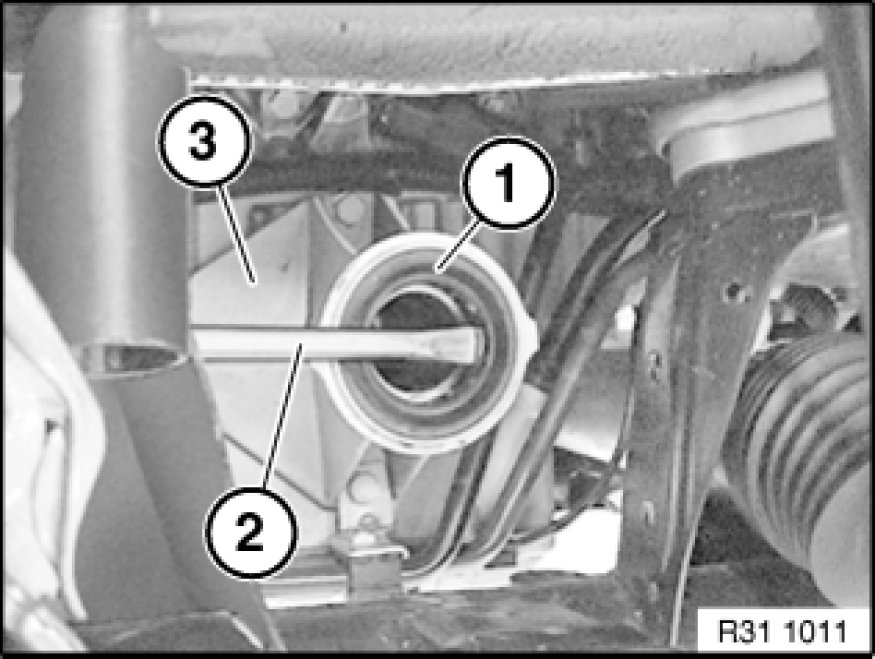
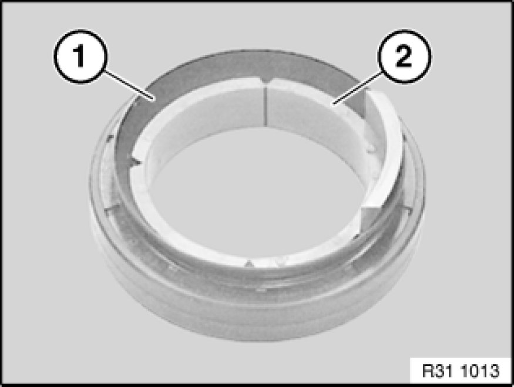
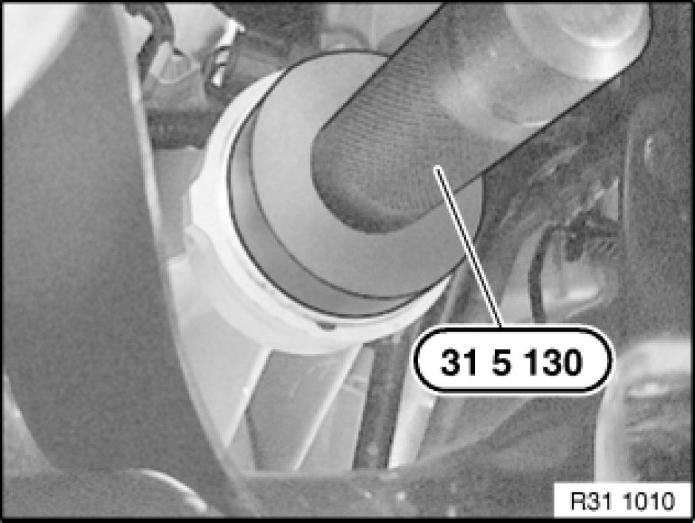

Replacing Shaft Seal for Right Output Shaft
31 51 020 - Replacing shaft seal for right output shaft

Special tools required:
- 31 5 130 31 5 130 Set of Impact Drifts

Necessary preliminary tasks:
- Remove right output shaft Removing and Installing/Replacing Left or Right Output Shaft

Lever shaft seal (1) with a screwdriver (2) out of bearing block (3).

Note:
Protective sleeve (2) serves to protect the sealing lips of shaft seal (1) from being damaged when the output shaft is inserted into the bearing block.

Installation:
Drive in shaft seal with special tool 31 5 130 31 5 130 Set of Impact Drifts as far as it will go.